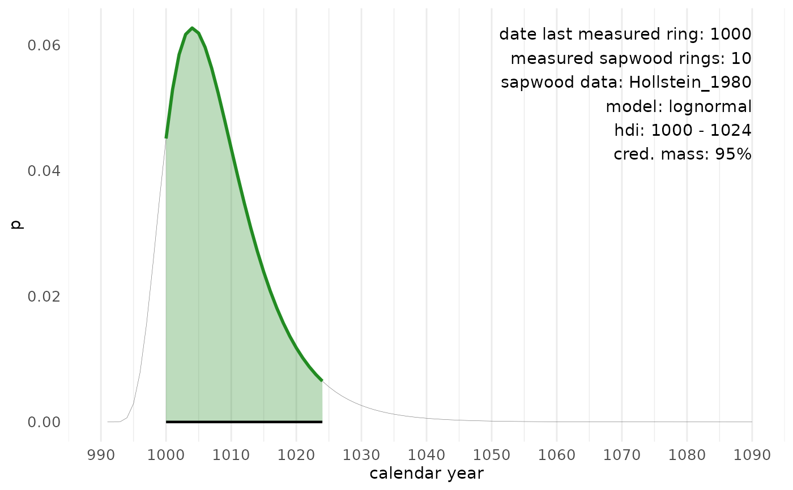

Returns a ggplot-style graph of the probability density function for the
felling date range, as computed by sw_interval().
Arguments
- x
Output of
sw_interval().- area_fill
Fill color for the area under fitted distribution.
- line_color
Line color for the fitted distribution.
Value
A ggplot-style graph, with calendar years on the X-axis and the probability (p) on the Y-axis.
Examples
tmp <- sw_interval(
n_sapwood = 10,
last = 1000,
hdi = FALSE,
cred_mass = .95,
sw_data = "Hollstein_1980",
densfun = "lognormal",
plot = FALSE
)
sw_interval_plot(tmp, area_fill = "forestgreen", line_color = "forestgreen")
